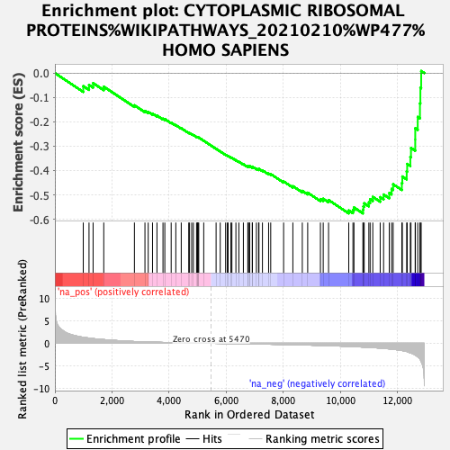

| | | Dataset | ER_ranked_genelist |
| Phenotype | NoPhenotypeAvailable |
| Upregulated in class | na_neg |
| GeneSet | CYTOPLASMIC RIBOSOMAL PROTEINS%WIKIPATHWAYS_20210210%WP477%HOMO SAPIENS |
| Enrichment Score (ES) | -0.57618964 |
| Normalized Enrichment Score (NES) | -1.9052098 |
| Nominal p-value | 0.0 |
| FDR q-value | 0.034813255 |
| FWER p-Value | 0.306 |
Table: GSEA Results Summary

Fig 1: Enrichment plot: CYTOPLASMIC RIBOSOMAL PROTEINS%WIKIPATHWAYS_20210210%WP477%HOMO SAPIENS
Profile of the Running ES Score & Positions of GeneSet Members on the Rank Ordered List
| SYMBOL | RANK IN GENE LIST | RANK METRIC SCORE | RUNNING ES | CORE ENRICHMENT | | 1 | RPS6KB1 | 993 | 1.343 | -0.0535 | No |
| 2 | RPS2 | 1194 | 1.157 | -0.0486 | No |
| 3 | RPL7A | 1337 | 1.044 | -0.0411 | No |
| 4 | RPSA | 1710 | 0.817 | -0.0556 | No |
| 5 | RPL37 | 2783 | 0.389 | -0.1321 | No |
| 6 | RPS6KA6 | 3152 | 0.305 | -0.1554 | No |
| 7 | RPL35 | 3266 | 0.281 | -0.1592 | No |
| 8 | FAU | 3417 | 0.252 | -0.1664 | No |
| 9 | RPS26 | 3572 | 0.226 | -0.1744 | No |
| 10 | RPL36 | 3783 | 0.194 | -0.1873 | No |
| 11 | RPL29 | 3847 | 0.186 | -0.1889 | No |
| 12 | RPL36A | 4070 | 0.155 | -0.2034 | No |
| 13 | RPL37A | 4232 | 0.133 | -0.2136 | No |
| 14 | RPL8 | 4422 | 0.104 | -0.2264 | No |
| 15 | RPS10 | 4684 | 0.076 | -0.2454 | No |
| 16 | RPS5 | 4713 | 0.073 | -0.2463 | No |
| 17 | RPL27 | 4788 | 0.064 | -0.2509 | No |
| 18 | RPS3A | 4847 | 0.059 | -0.2544 | No |
| 19 | RPL13 | 4958 | 0.049 | -0.2620 | No |
| 20 | RPS21 | 4987 | 0.046 | -0.2634 | No |
| 21 | RPL23 | 4996 | 0.045 | -0.2632 | No |
| 22 | RPS3 | 5015 | 0.043 | -0.2639 | No |
| 23 | RPL18 | 5035 | 0.041 | -0.2646 | No |
| 24 | RPS7 | 5209 | 0.023 | -0.2777 | No |
| 25 | RPS9 | 5642 | -0.016 | -0.3110 | No |
| 26 | RPS4X | 5787 | -0.028 | -0.3217 | No |
| 27 | RPL35A | 5975 | -0.044 | -0.3355 | No |
| 28 | RPL22 | 6035 | -0.051 | -0.3392 | No |
| 29 | RPS19 | 6062 | -0.054 | -0.3402 | No |
| 30 | RPS6KA2 | 6160 | -0.063 | -0.3467 | No |
| 31 | RPL18A | 6195 | -0.067 | -0.3481 | No |
| 32 | RPL34 | 6335 | -0.081 | -0.3575 | No |
| 33 | RPL12 | 6439 | -0.092 | -0.3639 | No |
| 34 | RPLP2 | 6597 | -0.109 | -0.3742 | No |
| 35 | RPL13A | 6752 | -0.124 | -0.3840 | No |
| 36 | RPS11 | 6769 | -0.126 | -0.3830 | No |
| 37 | RPS24 | 6805 | -0.130 | -0.3834 | No |
| 38 | RPL9 | 6819 | -0.132 | -0.3821 | No |
| 39 | RPS15 | 6908 | -0.141 | -0.3865 | No |
| 40 | RPL7 | 6913 | -0.142 | -0.3843 | No |
| 41 | RPL38 | 7052 | -0.157 | -0.3922 | No |
| 42 | RPS28 | 7130 | -0.164 | -0.3953 | No |
| 43 | RPL28 | 7142 | -0.166 | -0.3932 | No |
| 44 | RPL41 | 7264 | -0.178 | -0.3995 | No |
| 45 | RPL11 | 7480 | -0.202 | -0.4126 | No |
| 46 | RPL27A | 7554 | -0.214 | -0.4145 | No |
| 47 | RPL32 | 8005 | -0.266 | -0.4448 | No |
| 48 | RPS12 | 8329 | -0.312 | -0.4644 | No |
| 49 | RPL39 | 8659 | -0.363 | -0.4836 | No |
| 50 | RPS14 | 8848 | -0.394 | -0.4913 | No |
| 51 | RPS16 | 9293 | -0.475 | -0.5174 | No |
| 52 | RPL14 | 9391 | -0.496 | -0.5162 | No |
| 53 | RPS27 | 9578 | -0.530 | -0.5212 | No |
| 54 | RPL6 | 10285 | -0.692 | -0.5639 | Yes |
| 55 | MRPL19 | 10432 | -0.730 | -0.5624 | Yes |
| 56 | RPL26 | 10467 | -0.740 | -0.5519 | Yes |
| 57 | RPL10A | 10780 | -0.840 | -0.5613 | Yes |
| 58 | RPL10 | 10796 | -0.847 | -0.5475 | Yes |
| 59 | RPLP1 | 10826 | -0.856 | -0.5346 | Yes |
| 60 | RPS6 | 10988 | -0.910 | -0.5310 | Yes |
| 61 | RPL23A | 11033 | -0.921 | -0.5181 | Yes |
| 62 | RPS29 | 11126 | -0.954 | -0.5084 | Yes |
| 63 | RPL3 | 11385 | -1.072 | -0.5095 | Yes |
| 64 | RPL19 | 11504 | -1.128 | -0.4987 | Yes |
| 65 | RPL4 | 11703 | -1.233 | -0.4922 | Yes |
| 66 | RPLP0 | 11784 | -1.284 | -0.4757 | Yes |
| 67 | RPS8 | 11839 | -1.326 | -0.4565 | Yes |
| 68 | RPL5 | 12143 | -1.594 | -0.4518 | Yes |
| 69 | RPS6KB2 | 12160 | -1.611 | -0.4245 | Yes |
| 70 | RPL15 | 12313 | -1.813 | -0.4043 | Yes |
| 71 | RPS23 | 12330 | -1.833 | -0.3730 | Yes |
| 72 | RPS20 | 12440 | -2.114 | -0.3441 | Yes |
| 73 | RPL30 | 12463 | -2.165 | -0.3075 | Yes |
| 74 | RPS18 | 12612 | -2.607 | -0.2728 | Yes |
| 75 | RPL31 | 12613 | -2.609 | -0.2266 | Yes |
| 76 | RPS6KA3 | 12699 | -3.005 | -0.1800 | Yes |
| 77 | RPS25 | 12777 | -3.500 | -0.1241 | Yes |
| 78 | RPS6KA1 | 12792 | -3.662 | -0.0603 | Yes |
| 79 | RPS13 | 12820 | -4.009 | 0.0086 | Yes |
Table: GSEA details [plain text format]
Fig 2: CYTOPLASMIC RIBOSOMAL PROTEINS%WIKIPATHWAYS_20210210%WP477%HOMO SAPIENS: Random ES distribution
Gene set null distribution of ES for CYTOPLASMIC RIBOSOMAL PROTEINS%WIKIPATHWAYS_20210210%WP477%HOMO SAPIENS